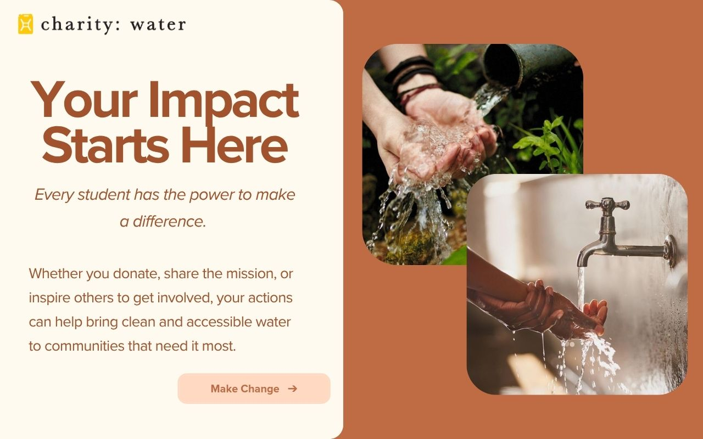
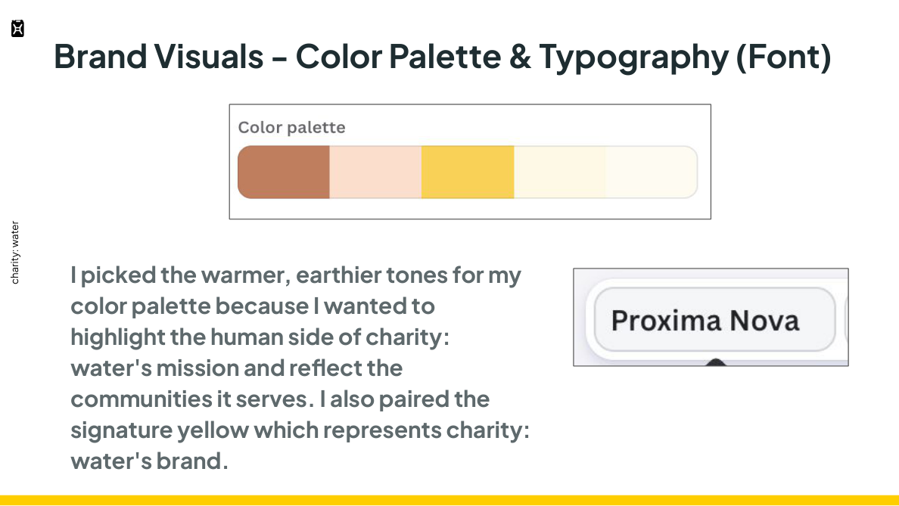
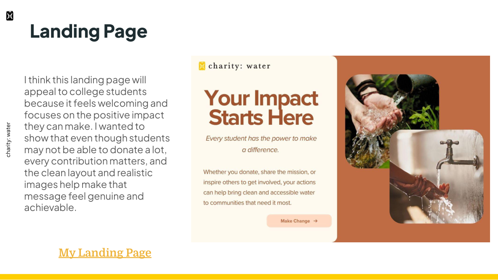

College students interested in social impact.
UX/UI / DIGITAL CAMPAIGN · 2026
charity: water
Activating the next generation of clean-water supporters.
An audience-led landing page concept that turns small student actions into an accessible invitation to support clean water.

01 / Audience
Connecting with student supporters
The concept focuses on an activist student persona, Emma, and the idea that meaningful change does not require a large donation.
Small actions can create meaningful change.
02 / Messaging
Your Impact Starts Here
I built the landing-page message around agency: students can donate, share the mission, or inspire others to participate in expanding access to clean water.
Your Impact Starts Here
Make Change
Welcoming, encouraging, and action-oriented.
03 / Visual direction
Warmth, humanity, and optimism
I chose earthy browns, soft cream tones, and charity: water yellow to highlight the human side of the mission. Photography focuses on the positive impact of access to water.
Earth tones + signature yellow.
Proxima Nova in the concept.
Authentic scenes of clean water and everyday impact.
04 / Landing page
Turning the message into a clear invitation
The landing page combines a strong headline, approachable copy, authentic photography, and a visible call to action. It is intended to make supporting the cause feel achievable for students.
Show outcomes, not only the problem.
Connect small individual actions to community impact.
05 / Reflection
Designing for meaningful action
This project helped me connect audience research, messaging, visual identity, and front-end presentation. The focus was making the mission feel accessible without losing its importance.
A designed landing page, not a measured fundraising campaign.
PROJECT GALLERY
Campaign strategy in practice
See how audience positioning, copywriting, visual identity, and landing-page design work together to make a social-impact message approachable.

